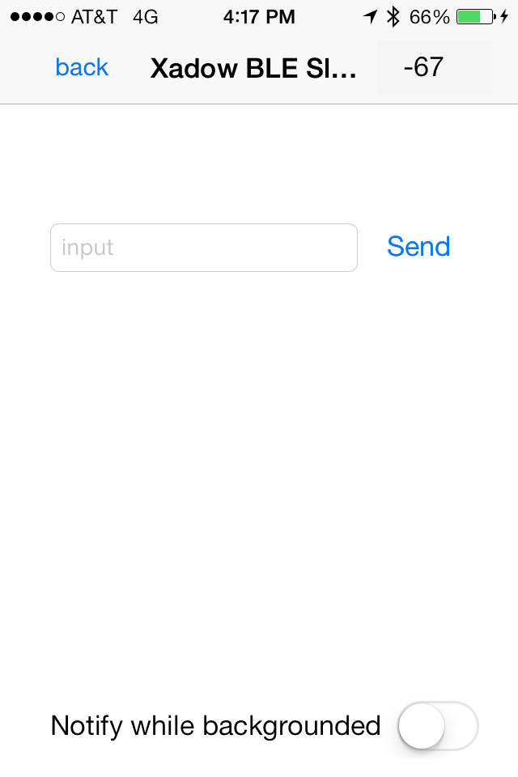
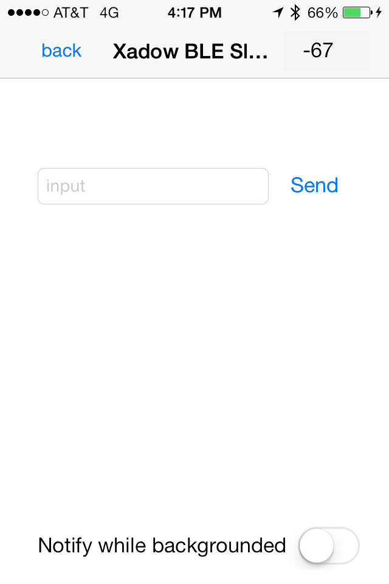
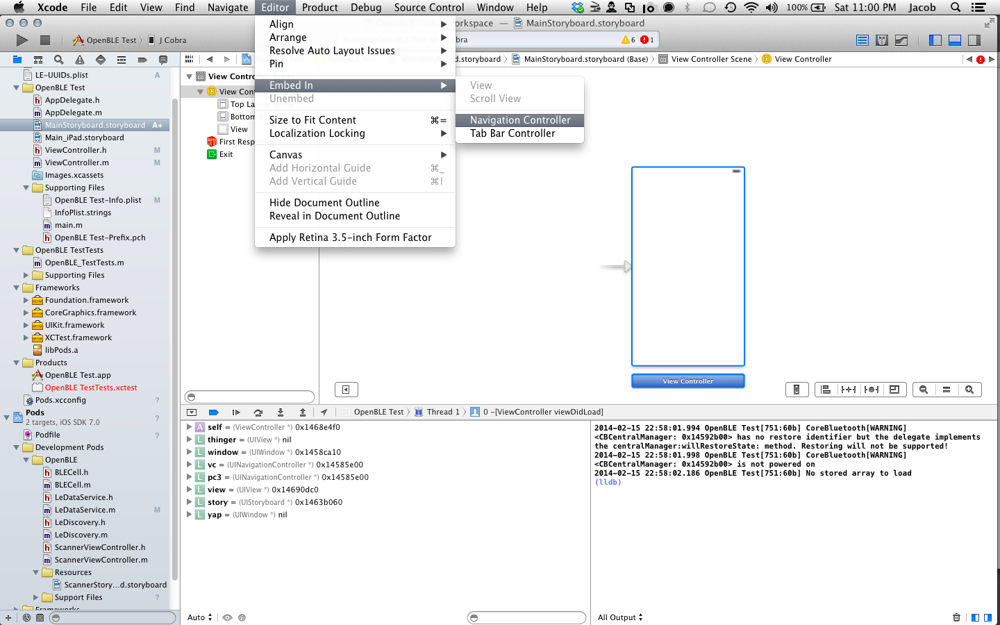

Description
A simple iOS iPhone application and source code that demonstrates how to use the CoreBluetooth Framework to connect to a Bluetooth LE 'spp' peripheral. It lists bluetooth devices, connects and segues to a screen where you can send and receive data. It even has reconnect on loss of connection, and backgrounding support!
 

BUILD REQUIREMENTS:
- Xcode 5 or greater
- iOS 7 SDK or greater
RUNTIME REQUIREMENTS:
- iOS 6 or later - will not work on the simulator
- Bluetooth LE Capable Device - iPhone 4s and later; iPad 3 and later; iPod Touch 5; iPad mini
- Bluetooth LE Sensor - Currently supports the Seeed Studio Xadow BLE device as well as the Redbear device and you can add support for other devices using the plist files.
Install it the hard way
Download OpenBLE and copy everything in /Classes into your xcode project. Or more preferrably install via cocoapods.
Install it via Cocoapods
Create a new xcode project, if you don't have an existing one or our example, then open a terminal and enter the directory where your .xcodeproj lives and type:
sudo gem install cocoapodsNow Cocoapods is installed in your system so you'll never have to do that again. Now you need a Podfile where your .xcodeproj lives. If you're running our example project you already have one! So just cd there and skip this step. If you've created a new project type:
touch Podfile
echo -e "platform :ios, '6.0'\npod 'OpenBLE'" >> PodfileNow that cocoapods knows what to install for this project, type:
pod installIt should complete and tell you to utilize the new .xcworkspace from now on. Close your project if it was open, and open that new xcworkspace file. There's one thing you need to yet no matter what. You need to manually copy over the LE-Options.plist and LE-UUIDs.plist files from the Resources directory of OpenBLE. These files set up your scan preferences and UUIDs. By making them not part of the dependancy you can update them with new information and they wont get changed when you update OpenBLE.
Use it
There are several pieces to the OpenBLE project.
- ScannerViewController and ScannerStoryboard
- LeDiscovery class
- LeDataService class
ScannerViewController and ScannerStoryboard
With these two files we've attempted to make a reference implementation to get a Chooser interface in your own app with almost no setup. Go to your target's General tab and set your Main Interface to ScannerStoryboard.storyboard, make sure to (re)name your storyboard to MainStoryboard and embed your initial View Controller in a Navigation Controller. 
Now you can just run your app and you'll see the Chooser window and if you have BLE devices in range you'll see them! When you select a bluetooth device it will connect and segue to the initial View Controller of the MainStoryBoard. Nothing else is hooked up so nothing happens, but you're scanning for BLE devices! So let's make something happen.
In your View Controller:
#import "ScannerViewController.h"And then presumably in viewDidLoad, you can dig out the peripheral you chose with:
- (void)viewDidLoad
{
[super viewDidLoad];
// Do any additional setup after loading the view, typically from a nib.
UINavigationController *navController = (UINavigationController*)[self.navigationController presentingViewController];
ScannerViewController *rootController =(ScannerViewController*)[navController.viewControllers objectAtIndex:0];
CBPeripheral *peripheral = (CBPeripheral*)rootController.currentPeripheral;
}Note, if you don't hang on to your CBPeripheral object your connection will be terminated by the sytem.
LeDataService class
Now that you have a peripheral you'll want to send and receive data. Thus the second part of OpenBLE, LeDataService, is a reference implementation for serial BLE devices. First, we need to set ourselves as a delegate for the LeDataProtocol so we can receive updates. In your ViewController.h file:
#import <UIKit/UIKit.h>
#import "LeDataService.h"
#import "ScannerViewController.h"
@interface ViewController : UIViewController <LeDataProtocol>
@endThen, like we said above we need to hang on to our peripherals if we want to keep them. In this case LeDataService will hang on to our peripheral, but we need to hang on to it:
#import "ViewController.h"
@interface ViewController (){
LeDataService *dataService;
}
@end
@implementation ViewController
....Now back in viewdidload where we found our peripheral, lets init our service and start it up
dataService = [[LeDataService alloc] initWithPeripheral:peripheral delegate:self];
[dataService start];If startup was successful and the characteristics were found you'll get a serviceDidReceiveCharacteristicsFromService callback and you're ready to write. You'll get a didWriteFromService when complete and you can easily read from your device by registering for the serviceDidReceiveData callback:
-(void)serviceDidReceiveCharacteristicsFromService:(LeDataService *)service
{
NSData* tosend=[@"Hello World" dataUsingEncoding:NSUTF8StringEncoding];
[dataService write:tosend];
}
-(void)didWriteFromService:(LeDataService *)service withError:(NSError *)error
{
NSLog(@"Data Sent!");
}
-(void)serviceDidReceiveData:(NSData *)data fromService:(LeDataService *)service
{
NSString* text = [[NSString alloc] initWithData:data encoding:NSUTF8StringEncoding];
NSLog(@"%@", text);
}Congrats, you're writing and reading from your device! Go on and start creating your app! For those who dont want to use the Storyboard, or want to know whats going on under the hood, continue below.
LeDiscovery Class
If you didnt want to use our storyboard as above, you'll need a quick walkthrough for discovery, too. If you did anything above, start over in a new project or if you trust yourself just undo everything. You need to set your class (probably a view controller) as a LeDiscoveryDelegate
@interface ViewController : UIViewController <LeDiscoveryDelegate>
@endCreate a discovery object, probably in your viewDidLoad, set yourself as its delegate, and start scanning for all devices (nil)
[[LeDiscovery sharedInstance] setDiscoveryDelegate:self];
[[LeDiscovery sharedInstance] startScanningForUUIDString:nil];When the Discovery finds something it will tell you with th the discoveryDidRefresh delegate so set up that function:
- (void) discoveryDidRefresh
{
//Connect to the first you find
NSArray *peripherals = [[LeDiscovery sharedInstance] foundPeripherals];
if([peripherals count] > 0){
CBPeripheral *peripheral = (CBPeripheral*)[peripherals objectAtIndex:0];
[[LeDiscovery sharedInstance] connectPeripheral:peripheral];
}
}You get a peripheralDidConnect delegate for a connect:
- (void) peripheralDidConnect:(CBPeripheral *)peripheral
{
NSLog(@"Connected to: %@", [peripheral name]);
}
From there you've got a peripheral just like above! Like we mentioned there, make sure you save it or the system will disconnect the device and clear the memory. Take a look above at using LeDataService to make it easier to talk to your device!
User Settings
Adding new device UUIDs to the LE-UUIDs.plist should be self explanatory. There are read UUIDs, write UUIDs and service UUIDs, and at least one of each is necessary.
Options are a bit trickier, sadly. init-options is mapped to the CBCentralManager initWithDelegate options. connect-options is mapped to the CBCentralManager connectPeripheral options and scan-options is mapped to the CBCentralManager scanForPeripheralsWithServices options. Look up each of these 3 to see what options are available. Normally you'd enter they defined constant key, for instance, CBCentralManagerScanOptionAllowDuplicatesKey into the array. However since we're storing strings in a plist, we don't have access to that constant. What we do have access to the string it defines. So to enable CBCentralManagerScanOptionAllowDuplicatesKey we have to enter kCBScanOptionAllowDuplicates. To find the correct keys string you'll have to NSLog the key or look it up. Again we don't think this is ideal, so we're looking for feedback on better options.
Further reading
- Apple Core Bluetooth Programming Guide
- WWDC Videos (sign in required)
- Apple Temperature Sensor Example
Support or Contact
Use the github issues queue https://github.com/OpenBLE/OpenBLE/issues to report bugs or contribute code.